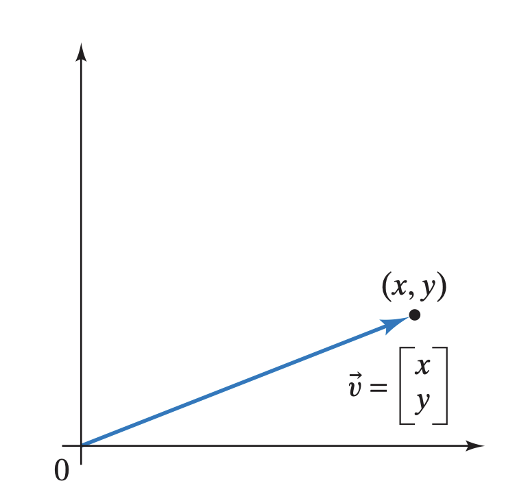
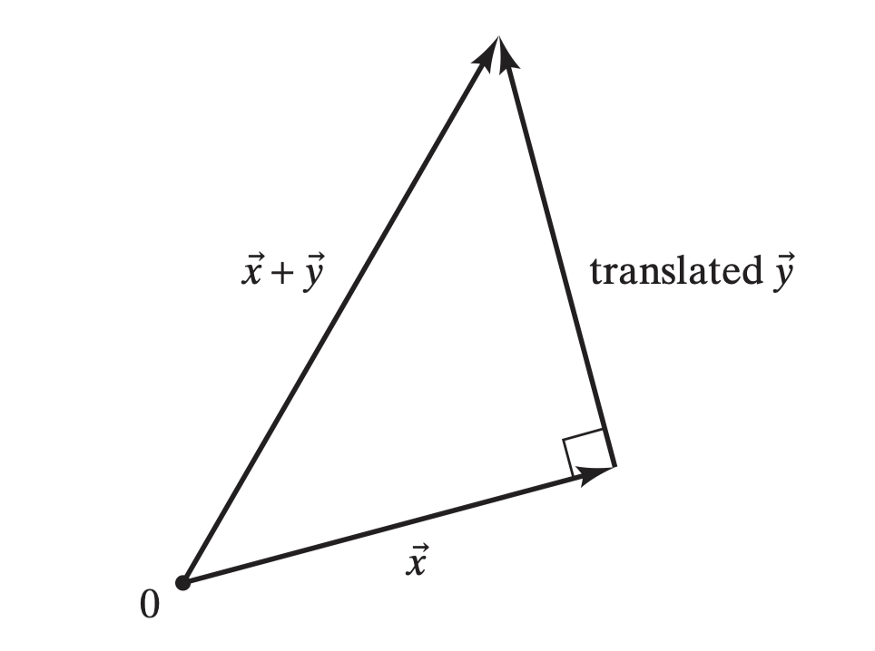
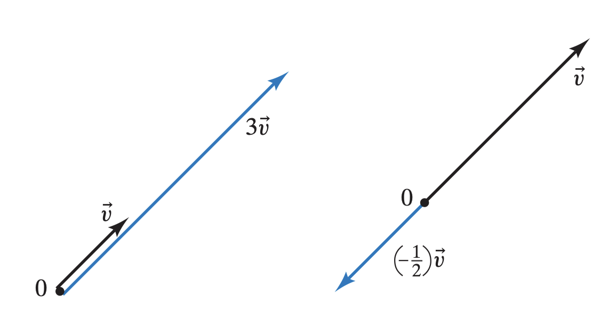

A vector in the physical sense is some quantity with both a direction and magnitude.
For example, in 2D space, a vector can be represented by an arrow:

We don't necessarily assign a position to such vectors; instead, we can assume (for some standard representation) that vectors start at the origin. In this convention, vectors in n-dimensional space can be identified with the position of their head and thus can also be regarded as position vectors.
Lines
Recall that last week, we found that the solution to {x+y+z=3x−y+z=1
was x=2−t,y=1, and z=t for any number t. If we take the interpretation of this system being the intersection of planes in 3D space, then our solution is the collection of vectors 2−t1t,
which form a line in 3D space.
Vector notation
We can write vectors as ordered-tuples (x,y,z) or as "columns" xyz.
We will take the convention that a (column) vector is a column. We may write v or v to refer to a variable. We will also refer to the individual values x,y,z of a vector as its coordinates or components.
Adding vectors
You may have seen that in the physical intepretation of vectors, we may add two vectors x and y. This was done by translating y so that the "tail" of y is on the "head" of x. Then the sum x+y is the vector starting at the "tail" of x and going to the "head" of y:

If you work out some examples, you will notices that the coordinates of the sum x+y are the sum of the corresponding coordinates of x and y.
More specifically, if we have two vectors x=x1⋮xn,y=y1⋮yn, then we define x+y=x1+y1⋮xn+yn
Scaling vectors (scalar multiplication)
In the physical sense, we also had a notion of scaling a vector v by a constant k. If k is positive, then the scaled vector kv would be in the same direction of v but with k times the length. If k is negative, then the direction of kv would flip 180 degrees and the length of kv would be ∣k∣ times the length of v. As examples, consider:

Some explicit examples will reveal that the coordinates of kv are k times the coordinates of v.
More specifically, if we have a vector v=v1⋮vn,
then the scaled vector is defined to be kv=kv1⋮kvn.
Matrices
You may have seen matrices in the past. They may have been introduced formally as tables of numbers. For example, we might have (142536).
Moreover, we refer to the size of a matrix by its number of rows × its number of columns.
2×3 Matrix
B=(142536)
3×4 Matrix
C=159261037114812
Matrices
A m×n matrix is a table of numbers with exactly mn entries arranged in m rows and n columns: a11a21⋮am1a12a22⋮am2⋯⋯⋱⋯a1na2n⋮amn.
The entry aij refers to the number in the ith row and jth column.
Vectors
A vector v=v1⋮vn
is an n×1 matrix! Note that the parantheses/bracket notations are irrelevant.
Augmented matrices
Recall that the augmented matrix for a linear system of equations ⎩⎨⎧a11x1+⋯am1x1+⋯+a1nxn=b1⋮+amnxn=bm
is a11⋮am1⋯⋱⋯a1n⋮amnb1⋮bm
The coefficients for the system were labelled as such to be consistent with the matrix formulation.
Adding and scaling matrices
Just as we defined for vectors, we can add and scale matrices. We just do these two operations "entry-wise".
Matrix-vector multiplication
Let's go back to a linear system ⎩⎨⎧a11x1+⋯am1x1+⋯+a1nxn=b1⋮+amnxn=bmand its augmented matrix a11⋮am1⋯⋱⋯a1n⋮amnb1⋮bm. Let A denote the matrix of coefficients and b the vector of RHS values so that the augmented matrix is (Ab).
Moreover, if we let x=x1⋮xn
be the vector of variables, then it is very natural to represent our linear system as Ax=b.
To make any sense, we need define matrix-vector multiplication. Of course, we should use the linear system as a guide. Note that the linear system can be equivalent written as a vector equation: x1a11⋮am1+x2a12⋮am2+⋯+xna1n⋮amn=b1⋮bm
To ensure consistency we define matrix-vector multiplication as:
Matrix-vector multiplication
Let A be a m×n matrix and x a vector in n dimensions (a n×1 matrix). If the columns of A are A1,…,An so that A=(A1⋯An), then we define Ax=x1A1+x2A2+⋯+xnAn,
which is a vector in m dimensions (m×1 matrix). Component-wise, we have Ax=∑i=1na1jxj⋮∑j=1namjxj
Matrices are functions or transformations
You may be familiar with funcitons that map/transform a number x to some value f(x). For example f(x)=x2 maps a number to its square.
In the same sense, a m×n matrix A maps a vector in n dimensions to a vector in m dimensions. Moving forward we will denote the set of vectors in d dimensions as Rd. Using this notation, A is a function that inputs a vector in Rn and outputs a vector in Rm. In shorthand: RnARm
Size of vectors in the matrix-vector multiplication
We only defined the matrix-vector multiplication when the size (number of rows) of a vector equals the number of columns of the matrix. For short hand if we write the sizes of the matrix and vector next to each other A(m×n)⋅x(n×1)
then the inner numbers (n in this case) must match. For example, a matrix-vector multiplication with sizes (3×2)⋅(3×1)
is not defined.
Exercises
Determine the matrix-vector product or if it is not defined
[0312][2−3]
135246[12]
[142536][78]
[123]123
[5][7]
Aeiwhere A is a m×n matrix with columns A1,A2,…,An and ei is a vector in Rn with all its components being 0 with the exception of its ith component which is 1. We call ei a standard basis vector in Rn.
Solution: For 6, the answer is Aei=Ai. So applying A to ei extracts the ith column Ai. Note that A is entirely determined by its columns and thus entirely determined by how it behaves when applied to ei.
Matrix multiplication
Recall that we can compose functions. For example if f(x)=x2
and g(x)=sin(x),
then the composition of f with g is another function (f∘g)(x)=f(g(x))=(sin(x))2
Structurally, we have f∘g:RgRfR
Since we think of matrices as functions, it is natural that we should be able to compose them! Let's suppose we have a m×n matrix A and an k×m matrix B. So we have RnARm
and RmBRk.
Then if we have some vector x in Rn, we can apply A to it to get a vector Ax in Rm. Then we can apply B to this vector Ax to get a vector B(Ax) in Rk. Since this is the process of funciton composition, we can define the compostion BA as (BA)x=B(Ax). Note: We put the parentheses around BA to emphasize that it is a single function.
In particular, we have BA:RnARmBRk.
For now, let us assume that BA is itself a matrix (we will see later in the course why BA is a matrix, but for now it might be expected since both A and B are matrices). Since it maps Rm to Rk, it should be a k×m matrix.
If BA is a k×m matrix, then what does it look like?
Recall from above that applying a matrix to ei extracts its ith column. Using this we see that (BA)ei=B(Aei)=BAi
where Ai is the ith column vector of A. Thus we must have that BA=(BA1BA2⋯BAn).
So BA is just B applied to the columns of A.
Now if we think of A and B as matrices instead of functions, then this derivation gives us a formula for matrix multiplication:
Matrix multiplication
If A is an m×n matrix and B a k×m matrix, then the matrix product BA is defined as BA=Ba11⋮am1Ba12⋮am2⋯Ba1n⋮amn
which is to say that the columns of BA are B applied to the columns of A. Entrywise, we have (BA)ij=Ba1j⋮amji=k=1∑nbikakj
Sizes of matrices in matrix multiplication
Because we only defined matrix-vector multiplication for when the size of the vector matched the number of columns of the matrix, the matrix multiplication BA is only defined when the output size (number of rows) of A equals the input size (number of columns) of B. More succinctly, if B is k×l and A is m×n, then writing their sizes together B(k×l)⋅A(m×n)
shows that the matrix mutliplication is only defined when l=m. For example, (2×3)⋅(3×1)
is a well-defined matrix multiplication, but (2×3)⋅(2×3)
is not.
Exercises
Determine the following matrix products, if they are defined.
1−2−1201000112121241256121What do you notice about this matrix multiplication?
100010001147258369
234615(112233)
234615111222333
Exercise
Let A be a 3×2 matrix. If A(10)=123
and A(01)=456,
then what is A?